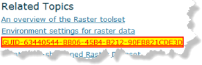

Category 2
This is the summary paragraph for the yet unnamed second category. One paragraph (in Latin) follows.
Integer erat dolor, interdum viverra vulputate sed, consectetur ut odio. Curabitur laoreet dui ac neque lobortis porta. Phasellus venenatis, odio ut pulvinar hendrerit, dolor nisl fringilla libero, vitae rutrum velit metus eleifend dui. Curabitur faucibus auctor auctor. Pellentesque congue libero eget ante placerat sit amet laoreet mi pulvinar. Integer at lorem metus. Donec in diam sem, venenatis porta metus. Integer.
Function 3 |
This is the summary for our third function. I have added this sentence to test conref following.
Quisque leo augue,  hendrerit quis aliquam at, adipiscing ut ligula.
Function 4 |
This is the summary for our FORTH function.
Nullam at tortor dictum felis tincidunt feugiat. In quam massa, vehicula vitae auctor et, semper nec neque. Pellentesque quam libero, bibendum id tempor vel, imperdiet in eros. Curabitur varius adipiscing sapien et luctus. Donec vel tortor vitae magna venenatis imperdiet.
Analyze Patterns
Understanding patterns created by features can help to answer many questions. These tools allow you to see areas with concentrations of incidents or identify any areas of statistically significant clusters.
- Explore Correlations lets you to explore dependencies between attribute data.
- Find Hot Spots will analyze incident data (such as crimes, traffic accidents, or trees) or the values associated with features (such as the number of people in each census tract or total sales for retail stores).
Create Density Surface |
Density analysis takes known quantities of some phenomenon and spreads them across the landscape based on the quantity that is measured at each location. For example, you might have a point value for each town representing the total number of people in the town, but you want to learn more about the spread of population over the region. Since all the people in each town do not live at the population point, by calculating density, you can create a surface showing the predicted distribution of the population throughout the landscape.
Explore Correlations |
This tool is for exploring relationships between the numeric attributes of features. One of the attributes is designated as the dependent variable, and this tool calculates the statistical correlation for up to ten other numeric attributes known as the independent variables. A high correlation between the dependent variable and an independent variable means that the independent variable can be predicted from the dependent variable. You can use Explore Correlations to answer such questions as:
- Which demographic characteristics are most strongly related to high voter turnouts?
- Does proximity to liquor stores have a strong and consistently positive relationship with crime?
- Are you more likely to be robbed in a rich or poor neighborhood, at night or during the day, on the south side of town or the west side?
Find Hot Spots |

|
This tool will analyze incident data (such as crimes, traffic accidents, and trees) or the values associated with features (such as the number of people in each census tract or total sales for retail stores). It finds statistically significant spatial clusters of high values (hot spots) and low values (cold spots). For incident data, hot spots are locations with lots of incidents.
Enrich Locations
Data enrichment tools allow you to explore the character of areas. Detailed demographic data and statistics are returned for your chosen areas. Comparative information can also be reported for expanded areas such as counties and states.
Enrich Features |
Using this tool you can get information about the people, places, and businesses in a specific area or within a distance or drive time from a location.
Find Locations
These tools can be used to identify areas that meet a number of different criteria you specify. Suitable locations can be identified where areas of interest have clear thresholds (such as within 1 mile) and all requirements or criteria must be met. The areas that are found can be selected from existing features (such as existing land parcels) or new features can be created where all the requirements are met.
- Find suitable locations searches for existing areas in an analysis layer that meet a series of criteria.
- Derive New Locations creates new areas from locations in your study area that meet a series of criteria.
Find Existing Locations |
This tool selects existing features in your study area that meet a series of criteria you specify. These criteria can be based on attribute queries (for example, parcels that are vacant) and spatial queries (for example, within 1 mile of a river).
Derive New Locations |
This tool creates new features in your study area that meet a series of criteria you specify. These criteria can be based on attribute queries (for example, parcels that are vacant) and spatial queries (for example, within 1 mile of a river).
Interpolate Values
Interpolation is the process of predicting values between known sample points to create a continuous surface of values. There are many continuous features in geography such as elevation and rainfall. It is rarely possible to gather samples for all locations, so interpolation is used to calculate values for places with no sample values.
Create Interpolated Surface |
Predicts the values between known points to create a continuous surface of values. Four methods are offered: kriging, inverse distance weighting, natural neighbors, and local polynomial.
A new layer is created showing the predicted surface. With kriging and local polynomial methods, a second layer showing prediction errors is also created.
Manage Data
The tools in the Manage Data category are used for both the day-to-day management of geographic data and for combining data prior to analysis.
- Attribute Calculator is for calculating new attribute values using existing attribute values and formulas.
- Dissolve boundaries merges together areas that share a common boundary and a common attribute value.
- Extract Data creates new datasets by extracting areas from your existing data.
- Merge Layers creates a new layer by copying features from two or more layers.
- Overlay Layers combines two or more layers into one single layer. You can think of overlay as peering through a stack of maps and creating a single map containing all the information found in the stack.
Attribute Calculator |
The attribute calculator allows you to do a calculation on an attribute in your layer.
Dissolve Boundaries |
Areas sharing a common boundary are merged together if they have the same value for an attribute. For example, if you have a layer of counties, and each county has a State_Name attribute, you can dissolve boundaries using the State_Name attribute. Adjacent counties will be merged together if they have the same value for State_Name. The end result is a layer of state boundaries. You can also summarize attributes for the merged feature. For example, if each county had a Population attribute, you could calculate the sum of Population for the state.
Extract Data |

|
Using Extract Data you can select and download data for a specified area of interest. Layers that you select will be added to a zip file or layer package.
Merge Layers |
This tool copies all the features from two or more existing layers into a new layer. The layers to be merged must all contain the same feature types (points, lines, or areas). You can control how the attributes from the input layers are joined and copied. For example:
- I have three layers for England, Wales, and Scotland and I want a single layer of Great Britain.
- I have 12 layers and each contains parcel information for contiguous townships. I want to join them together into a single layer, keeping only the attributes that have the same name and type on the 12 input layers.
Overlay Layers |

|
Overlay combines two or more layers into one single layer. You can think of overlay as peering through a stack of maps and creating a single map containing all the information found in the stack. In fact, before the advent of GIS, cartographers would literally copy maps onto clear acetate sheets, overlay these sheets on a light table, and hand draw a new map from the overlaid data. Overlay is much more than a merging of line work; all the attributes of the features taking part in the overlay are carried through to the final product. Overlay is used to answer one of the most basic questions of geography, "what is on top of what?" For example:
- What parcels are within the 100-year floodplain? (Within is just another way of saying on top of.)
- What roads are within what counties?
- What land use is on top of what soil type?
- What wells are within abandoned military bases?
Summarize Data
Summarize Data tools calculate total counts, lengths, areas, and basic descriptive statistics (average, minimum, maximum, and so on) of attributes for features within areas or near to other features.
- Aggregate Points calculates statistics about points that fall within specified areas.
- Summarize Nearby calculates the sum, count, average, minimum, or maximum values for attributes within a specified distance.
- Summarize Within calculates the sum, count, average, minimum, or maximum values for attributes of area features that overlap each other.
Aggregate Points |

|
This tool works with a layer of point features (the analysis layer) and a layer of area features. It first figures out which points fall within each area. After determining this point-in-area spatial relationship, statistics about all points in the area are calculated and assigned to the area. The most basic statistic is the count of the number of points within the area, but you can get other statistics as well.
Summarize Nearby |
This tool finds features that are within a chosen distance of features in the analysis layer. Distance can be measured as a straight-line distance or a drive time distance (for example, within 10 minutes). Statistics are then calculated for the nearby features. For example:
- Calculate the total population within five minutes of a proposed new store location.
- Calculate the number of freeway access ramps within five minutes of a proposed new store location to use as a measure of store accessibility.
Summarize Within |
This tool finds areas (and portions of areas) that overlap between two layers and calculates statistics about the overlap. For example:
- Given a layer of watershed areas and a layer of land-use areas by land-use type, calculate total acreage of land-use type for each watershed.
- Given a layer of parcels in a county and a layer of city boundaries, summarize the average value of vacant parcels within each city.
Use Proximity
One of the most common questions posed in spatial analysis is "what is near what?" For example:
- How close is this well to a landfill?
- Do any roads pass within 1,000 meters of a stream?
- What is the shortest street network route from some location to another?
- Create Buffers create areas of equal distance from features.
- Create Drive Time Areas finds areas around locations that can be reached within a time period.
- Find Nearest is used to identify those places that are the closest to known locations.
Create Buffers |

|
A buffer is an area that covers a given distance from a point, line, or area feature. Buffers are typically used to create areas that can be further analyzed using a tool such as Overlay Layers. For example, if the question is "What buildings are within one mile of the school?", the answer can be found by creating a one-mile buffer around the school and overlaying the buffer with the layer containing building footprints. The end result is a layer of those buildings within one mile of the school.
Create Drive Time Areas |
Create Drive-Time Areas shows what areas can be reached within a specified drive time or drive distance. It measures out from one or more points, along roads, to create a layer that can help you answer questions such as:
- Where can I go from here within a 30-minute drive?
- Where can I go from here within a 30-minute drive at 6:00 p.m. during rush hour?
- What areas of town can the fire department reach within five minutes? How would fire-response coverage improve by building a new fire station here?
- What market areas does my business cover? What areas are within 10 miles of my stores?
 | Tip: |
To create areas by measuring straight-line distance—that is, as the crow flies—rather than by measuring along roads, use Create Buffers. |
Find Nearest |
This tool measures the cost of traveling between incidents and facilities and determines which are nearest to one other. The result is a layer showing the best routes between incidents and facilities along with the travel cost (time and distance) of each route. For example, you can use this tool to find the closest hospital to an accident or the closest ATM to your current location.